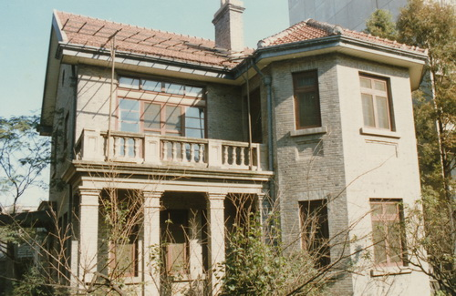
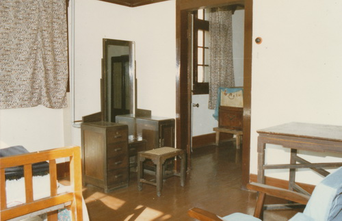
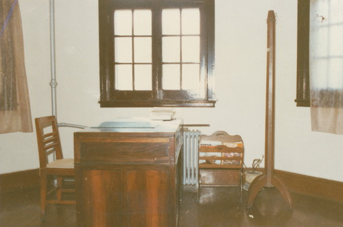

故居全貌

卧室一角

书房
吴贻芳故居位于江苏省南京市。1985年11月吴贻芳在南京病逝后，旅美金女大校友会筹集“吴贻芳基金”，并捐赠10000美金，将吴贻芳故居贻芳园修葺一新，校友胡秀英博士还捐款10000美金供南师大内的金陵女子学院购置图书。吴贻芳故居白墙青瓦，古朴雅致，庭院中有吴贻芳汉白身雕像，目光睿智，娴淑慈祥，吴贻芳纪念馆陈列着吴贻芳的历史照片和遗物，以及邓小平题写封面的《吴贻芳纪念集》。